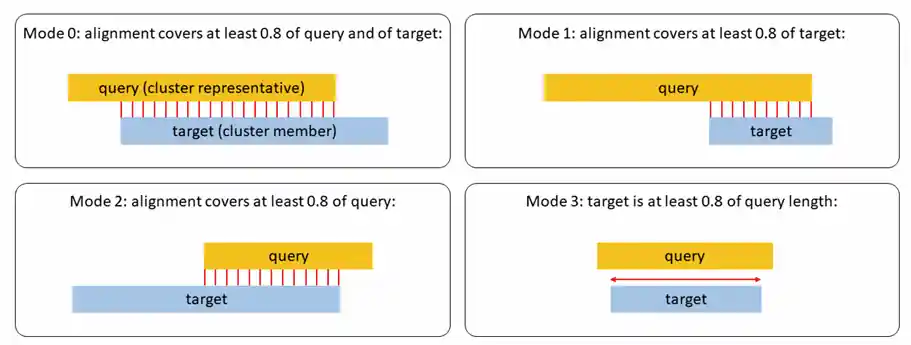

生物信息学工具¶
mmseqs2¶
User Manual: https://mmseqs.com/latest/userguide.pdf .
cluster¶
从 fasta 文件构建 mmseqs2 格式的数据库 mmseqs createdb examples/DB.fasta DB
Run cluster: mmseqs cluster DB DB_clu tmp:
DB: 数据库名字
DB_clu: 输出的聚类结果之前缀
tmp: 临时文件夹
可以有额外的参数。
- --min-seq-id
sequence identity threshold
- -c
MUST use with
--cove-modeoption.- --cov-mode
See image below.

mode 1 适合聚类蛋白片段。 "To suppress fragments from becoming representative sequences, it is recommended to use--cluster-mode 2 in conjunction with--cov-mode 1. Default --cluster-mode is the greedy incremental clustering (by length)"
cov-mode 参数详解：